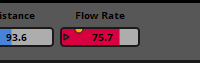
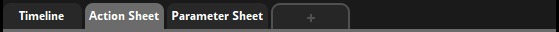
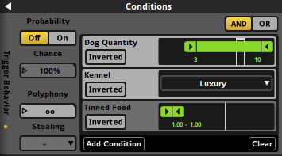

FMOD Studio User Manual 2.02
- Welcome to FMOD Studio
- FMOD Studio Concepts
- Organizing the Project
- Authoring Events
- Working with Instruments
- Managing Assets
- Parameters
- Getting Events into Your Game
- Mixing
- The Sandbox
- Editing During Live Update
- Profiling
- Dialogue and Localization
- Using Source Control
- Supporting Downloadable and User-generated Content
- Advanced Topics
- Quick Start Tutorial
- Event Macros Drawer Reference
- Instrument Reference
- Plug-in Reference
- Modulator Reference
- Parameters Reference
- Scripting
- Scripting API Reference
- Keyboard Shortcut Reference
- Troubleshooting
- Glossary
- Appendix: Celeste Getting Started Guide
- Appendix: Reaper Integration
7. Parameters
Parameters are variables that allow you to control your FMOD Studio project.
Parameters can be associated with specific events and snapshots. Global parameters can also be used in the mixer, to control bus properties. Your game's code can then set the values of those parameters in order to dynamically control the behavior of the associated events, snapshots, and buses as your game runs.
With the exception of timeline parameters, every parameter in your project is based on a preset parameter. Preset parameters allow you to quickly add identical parameters to multiple events, and the parameters based on a single preset parameter all share the same modulators. You can view your project's preset parameters in the preset browser window.
A parameter is automatically added to an event if it is used by at least one effect, automation curve, parameter trigger condition, or parameter sheet in that event.

When viewing an event in the editor, every parameter added to that event is represented by a number box in the transport bar. The number boxes for parameters with sheets and parameters without sheets are separated by a vertical line, with parameters with sheets on the left and parameters without sheets on the right.
Each number box indicates the value to which the corresponding parameter was most recently set. Under most circumstances, the current value of a parameter is equal to this value. When the current value of a parameter differs from the value to which it was most recently set, the current value is indicated by an orange dot on the number box.

You can set the value of a parameter by clicking and dragging its number box. Note that the values of a local parameter may vary from one instance of an event to another. By contrast, global parameters that reference the same global preset parameter all share the same values.
Clicking on a parameter's name in the transport bar selects that parameter and causes its properties to appear in the deck.

The deck allows you to set a parameter's current value, as well as the preset parameter's velocity and seek speed properties. Changing the velocity or seek speed of a preset parameter affects all the parameters based on that preset parameter. For more information about seek speed and velocity, see the parameters reference chapter.
Preset parameters have additional settings that can be changed in the edit parameter dialog, which opens automatically whenever you create a new parameter. In addition, you can open it by right-clicking on the parameter's name in the transport bar, sheet tab bar, or parameters browser, then selecting "Edit Parameter..." from the context menu.

The edit parameter dialog allows you to change a preset parameter's type, name, range, and initial value, as well as a number of other settings. Changes made in this dialog affect every parameter based on the preset parameter. For detailed information about the edit parameter dialog, see the parameters reference chapter.
7.1 Uses of Parameters
Parameters may be used to change the behavior of playing event instances in a number of different ways.
7.1.1 Parameter Sheets
Parameters with sheets are displayed as tabs in the sheet tab bar.

Clicking on a parameter's tab causes that parameter's sheet to appear in the editor. Each parameter sheet has a gray cursor and a white playback position. The cursor represents the value to which the parameter was most recently set, while the playback position represents the current value of the parameter. These values usually match unless the parameter is subject to seek speed, velocity, or modulation, or is a timeline parameter.

The playback positions of parameters with parameter sheets can trigger any instruments they pass over. Triggering an instrument either causes it to produce audio output, starts a snapshot, or issues a command. Each instrument belongs to a specific parameter, and appears on that parameter's sheet. For more information about instruments, see the working with instruments chapter.
7.1.2 Automation Curves
Automation is a way of making a property change its value depending on the value of a parameter. Nearly any property of an event, effect, track, or bus can be automated.

An automation curve is a line graph that indicates the value of the automated property for every possible value of the automating parameter.
A parameter may itself be automated. Global parameters may only be automated on other global parameters.
For more information about automation, see the automation and modulation section of the authoring events chapter.
7.1.3 Parameter Trigger Conditions
Parameters may be used for parameter trigger conditions by instruments and logic markers. Each parameter trigger condition specifies a parameter and a range of possible values for that parameter; for an instrument to trigger, the specified parameter's value must be within the specified range. When an instrument or logic marker has multiple parameter conditions, all of the parameter conditions must be met for the instrument or logic marker to trigger.

For more information about instruments and logic markers, see the instruments and timeline logic sections of the authoring events chapter.
7.2 Parameter Type
Whenever you create a new parameter, you must specify the parameter's type. Parameters can be timeline parameters, user parameters, or built-in parameters.
Changing the type of an existing preset parameter alters the settings that appear in the edit parameter dialog for that preset parameter, and may also cause other changes. Built-in parameters other than distance parameters have fixed ranges, so making a parameter into a built-in parameter usually changes its range, and prompts you to choose whether instruments and automation on that parameter are to be trimmed or rescaled. Making a parameter a labeled or discrete parameter forces instruments, automation, and trigger conditions on that parameter to trigger or change at integer values or labels. Changing the type of a labeled user parameter erases its labels.
For more information about specific types of parameter, see the parameters reference chapter.
7.2.1 Timeline Parameters
Timeline parameters are parameters that automatically advance when an event instance is playing. Each timeline parameter has a minimum value of 0 and a maximum value based on the rightmost logic marker or instrument in the event. Every newly created event contains a timeline parameter by default.
7.2.2 User Parameters
User parameters are parameters that can be customized to represent any variable in your game project. The values of user parameters may be updated from your game's code by using the FMOD Studio API, and can also be controlled by automation and adjusted by modulators. There are three different types of user parameter:
- Continuous user parameters use floating point (decimal) numbers. Each continuous parameter has a minimum and maximum value, and can be set to any floating point value within that range. Continuous parameters are most commonly used for variables that can change in very fine or arbitrary gradations.
- Discrete user parameters use integer (whole) numbers. Each discrete parameter has a minimum and maximum value, and can be set to any integer value within that range. Discrete parameters are most commonly used for variables that increase and decrease in increments of fixed size.
- Labeled user parameters use strings (labels). Each labeled parameter has a predefined list of labels as possible values, and can be set to any of those labels. Labeled parameters are commonly used for variables whose possible values don't have any obvious order or sequence.

7.2.3 Built-in Parameters
Built-in parameters use floating point (decimal) numbers, and are automatically updated as the positions of the event instances they're attached to change relative to the positions of the listeners. Adjusting the 3D preview automatically updates the values of built-in parameters. There are several kinds of built-in parameter:
- Distance built-in parameters track the distance between the listener and the event instance in game distance units.
- Distance (Normalized) built-in parameters track the distance between the listener and the event instance as a fraction of the difference between the event's minimum and maximum distance. This allows anything automated or triggered by a distance (normalized) parameter to respond to an event's minimum and maximum distance properties changing as your game is played.
- Direction built-in parameters track which way the listener is facing relative to the event instance.
- Elevation built-in parameters track whether the event instance is above or below the listener.
- Event cone angle built-in parameters track which way the event instance is facing relative to the listener.
- Event orientation built-in parameters track which way the event instance is facing relative to way the listener is facing.
- Speed built-in parameters track how quickly the event instance is moving relative to the listener.